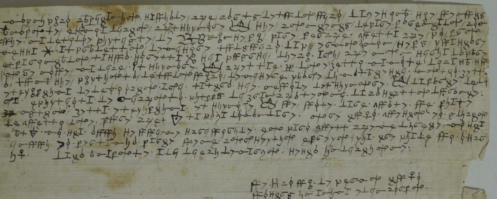
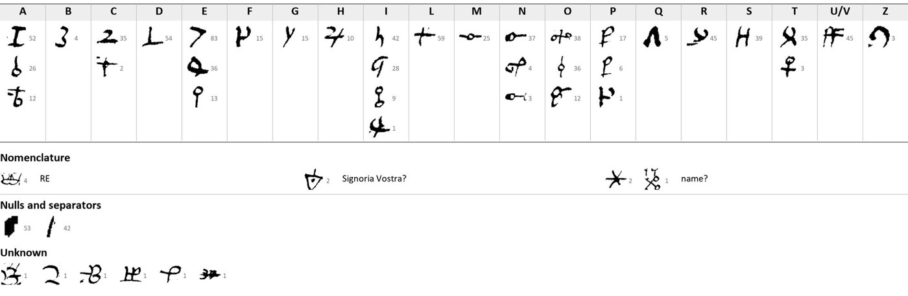

At a glanceKey recovered from the ciphertext alone · more than 95% of the text (George Lasry’s estimate)
- The letter
- The bishop(?) of Fermo to Sforza Attendolo, “magnifico capitanio”, Naples, 10 March 1413. The whole sheet is in cipher, the address on the back too.
- Where
- Archivio di Stato di Siena, Concistoro 2308, fasc. 2 “Lettere in cifra”, no. 12; DECODE R4790, catalogued “1500–1599” (a placeholder for the whole fascicle) with no status. A second photograph is in DECODE R1858.
- The cipher
- Homophonic substitution on 46 graphic signs: two to four signs for the vowels and some consonants, a stroke between words, a crown for “Re” and a few name signs.
- How it was deciphered
- Claude transcribed the 865 cipher signs from the photographs and George Lasry corrected them in CTTS. Claude’s own simulated annealing then recovered the key from the ciphertext alone, and Lasry refined it.
- What it says
- The King is willing to make a marriage alliance with Sforza and offers two girls of his house; Sforza may choose: “El signore [Re] ve vole dare quale ve piace de quelle doe”.
- Still open
- Two name signs, a few words marked (?) and the signature (“Vescovi(?) de Fermo”). The two girls’ fathers are not identified.
- Credit
- George Lasry, with CTTS and Claude, 15–17 October 2026: the reading, translation and dating below are his, from his report of 17 October 2026 on the Concistoro 2308 ciphers. This page files them and checks the record history.
No. 12 belongs to the Sienese bundle of cipher letters, in which each letter has its own key. Two pieces of the same spring, a captain’s letter from Perugia of 30 March 1413 and two royal memoranda of April, use a different cipher and have their own page. The unread pieces and the 43 filed keys are described on the bundle’s page.
01The letter and its key
One sheet. On the front, 16 lines of cipher with 822 signs; on the back, a 3-line address with 43 more. That makes 865 cipher signs and 95 word dividers, by George Lasry’s count. Nothing on the sheet is in clear. The scribe separates words with a short stroke or a heavy dot.

The key, as George Lasry rebuilt it: 46 distinct signs. Under each letter stand its homophones: three for a, e, n, o and p, four for i, two for c and t, one for each of the other letters. The nomenclature has a crown for Re, a sign probably for Signoria Vostra, and two name signs. Two signs are nulls or separators. Six signs that occur once each are still unknown.

02What it says
George Lasry’s decipherment, unchanged. The whole text is in cipher. Name signs are in [brackets], and ? marks a doubtful reading.
Magnifico capitanio, saviade(?) [= sappiate] che Carlo de Ludovico da Zesena s’è venuto a Napole, e sì me à dicto ch’el signore [Re] s’è contento di fare parentado con vuie. Ma(?) de le doe pigliole(?) [= figliole] de [?] [?] [?] nin se pi(?) pare, perché quella che fo promessa ? al fradello de misere Ludovico da Fermo non se pò guastare; el parentado la sua sorella ? si à fuorsi dieci ani, che non siria da pare(?). Or è nove(?), ma dice el signore [Re] che l’àe [?] doe belle mamole de casa sua: l’una s’è figliola de Ludovico de misere Giane di Malatesti; à [= è?] molto bella e legiptima, de dece octo ani; l’altra s’è nevode del signore [Re] da parte de deia(?); è figliola de Nicholo Fil[i]ppo di Branchaleoni da Cast[e]llo Durante: [è?] molto bella e legiptima. El signore [Re] ve vole dare quale ve piace de quelle doe, pure che el [Signoria Vostra?] la faza domandare. Or è tuto. Questo eo ò dicto al [Signoria Vostra?]. Mo sta a vui: se vui me scriveride, eo farò quell che me direte. Mo sta in vui. Eo per la mia parte ve ne conseglio e prego. Già tre fiade ve ò scrit[to]. Data a Napole a dì dieci de marzo, sesta indictione. Vescovi(?) de Fermo, tuto vostro in anima e in corpo.
On the back, the address: [Stre]nuo viro Sfortie [magn]ifico captaneo domo detur : [?] domin[?].
Translation (George Lasry)
“Magnificent captain, know(?) that Carlo di Ludovico da Cesena has come to Naples, and he has told me that the lord King is content to make a marriage alliance with you. But of the two girls(?) of [?] [?] [?] nothing(?) seems possible, because the one who was promised ? to the brother of messer Ludovico da Fermo cannot be undone; as for the marriage, her sister ? is perhaps ten years old, so she would not be suitable(?).
Now it is new(?), but the lord King says that he has [?] two beautiful girls of his house: one is the daughter of Ludovico di messer Gianne de’ Malatesti; she is very beautiful and legitimate, eighteen years old. The other is a niece of the lord King on the side of [?]; she is the daughter of Niccolò Filippo(?) di Brancaleoni of Castel Durante: [she is] very beautiful and legitimate. The lord King wants to give you whichever of the two you like, provided that Your Lordship(?) has her asked for.
Now that is all. This I have said to Your Lordship(?). Now it rests with you: if you write to me, I shall do what you tell me. Now it rests with you. I for my part advise and beg you to it. I have already written it to you three times. Given at Naples on the tenth day of March, sixth indiction. Vescovi(?) de Fermo, wholly yours in soul and in body.”
Address: “To the [stre]nuous man Sforza, [magn]ificent captain, lord … let it be delivered : [?] lord [?].”
03The date and the people
The letter gives only the day and the indiction: “a dì dieci de marzo, sesta indictione”. George Lasry dates it to 10 March 1413. The sixth indiction fell in 1413, a king was then on the throne of Naples, and Ludovico Migliorati, lord of Fermo from 1405 to 1428, was alive. That puts the letter three weeks before the captain’s letter from Perugia of 30 March 1413, when Ladislaus was gathering Sforza, Tartaglia and his other captains against Paolo Orsini in the Marche (nos. 20 and 23). Sforza had been a widower since 1411 and married Caterina Alopo in 1415, so the King’s offer came to nothing. The Malatesta and Brancaleoni girls are not yet identified.
04Was it deciphered before?
As far as can be found, no. DECODE marks a record called “Siena keys and ciphers” (R1858) as “Decrypted”, and its seventh image is a second photograph of no. 12, upside down. On 24 September 2026 this site took no. 12 as read because of that status, but did not count it as a result. Checked again on 18 October 2026: R1858 has no transcription, decryption or key file attached. Its other seven images are key sheets, and the photograph of no. 12 carries no gloss. R4790 itself has no status and no documents. Meister (1902) counts the piece but prints no reading. Lasry’s reading of October 2026 is the first known.
05What remains
- Two name signs (one used twice, one once) and the sign read as Signoria Vostra?.
- A few words marked (?) or [?], among them three signs after “de le doe pigliole de”, and six signs that occur once each.
- The signer (“Vescovi(?) de Fermo”), and the girls’ fathers, Ludovico di messer Gianni de’ Malatesti and Niccolò Filippo Brancaleoni of Castel Durante.
- The CTTS transcription of the signs is not in this repository, so the share read could not be measured here and there is no sign-by-sign replay.
06Sources
- Archivio di Stato di Siena, Concistoro 2308 fasc. 2 no. 12: DECODE R4790, images P1 (address) and P2 (letter); second photograph in R1858, image 7.
- George Lasry, The cipher documents of Concistoro 2308, fasc. 2 (Archivio di Stato di Siena): decipherments, keys, contents and historical context, consolidated report, 17 October 2026, sent to Daniel Bourdeau: no. 12, pp. 10–12.
- Sources cited in the report: Antonio di Niccolò, Cronaca fermana, ed. G. De Minicis (Firenze 1870), p. 39; A. Minuti, Vita di Muzzo Attendolo Sforza, Miscellanea di storia italiana 7, pp. 156–169; P. Pellini, Dell’historia di Perugia II, pp. 196–198; Dizionario Biografico degli Italiani, s.v. Lodovico Migliorati.
- A. Meister, Die Anfänge der modernen diplomatischen Geheimschrift (Paderborn 1902), pp. 50–51, on the bundle.
Manuscript rights: Archivio di Stato di Siena.
Report extract, reading, translation and key figure: targets/siena12/.